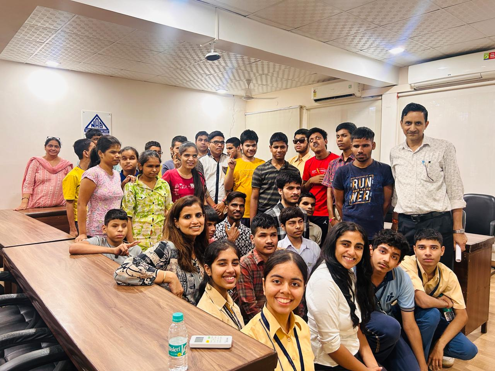

Eyecan, Eyes closed, vision limitless. A world of possibilities
Eyecan is a project empowering visually impaired children by providing audio resources to enhance their learning and independence.

About Us
Project Eyecan is a student-led initiative aimed at promoting mental health and well-being among visually impaired students. The campaign recognizes the unique challenges faced by students with visual impairments and seeks to create a supportive and inclusive environment that fosters confidence, positivity, and academic success.
Key Objective
- Increase understanding of the mental health issues
- Provide support: Offer resources, counseling services, and peer support groups
- Empowerment: Encourage visually impaired students to embrace their abilities
- Workshops and seminars: Conduct workshops on topics such as stress management, mindfulness, and self-care techniques
- Increase understanding of the mental health issues